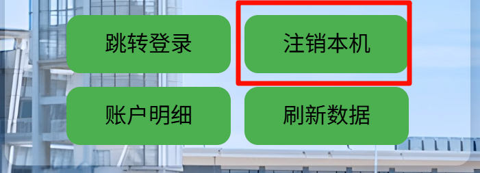

校园网常见问题
本页面内容由大连理工大学 NAOSI 网络与开源协会维护，若遇到未在本页列出的问题，请联系开发区校区网络服务办公室解决。
Q1: 已经登录校园网账号，但仍无法连接网络，“用户自助服务系统”中未显示当前设备在线信息，怎么办？

A1.1: 校园网本月使用流量为150G + nG，且余额不足 20 + n 元，特征为可用流量为0，解决方案为充值
A1.2: 仅登录了用户自助服务系统，实际上当前设备并未成功登录校园网。解决方法为：
- 法一：点击"注销登录"按钮后，访问 http://172.20.30.3/ 重新登录；
 - 法二：直接清除浏览器 cookie 后重新登录。
Q2: “用户自助服务系统”里账户余额明明不是 0 元，为什么无法上网？
A2: 不要看账户余额，看可用流量还剩多少，如果还剩 0M 那就是当月流量已耗尽。想继续用只能再充钱（超出部分 1 元 1GB，充钱后流量自动入账，到下个自然月重置）。
Q3: “用户自助服务系统”里可用流量明明不是 0M，为什么仍然无法上网？
A3: 此时账号状态为临停，原因是账户余额不足（为 0 元）。如果充钱之后又出现了无法上网的问题，是因为当前计费方式不是按月计费。
开发区校区校园网无法显式切换计费方式，当月采用哪种计费方式主要由账户余额决定，以下是校园网计费规则：
- 余额 ≥ 20 元，且当月流量 ≤ 150G：正常使用，每月扣 20 元月租。
- 余额 A ＜ 20 元，且当月流量 ≤ 150G：按天计费，每天 0.67 元。每天凌晨系统自动结算，当余额 A ＜ 0.67×已用天数 时，账号会临时停用。充值 N 元后可恢复，系统结算后余额为 a = A + N - 0.67×已用天数，若 a ＞ 0.67，当天可上网。
- 余额充足但流量 ＞ 150G：月底系统会在月租 20 元基础上，再扣除超出部分的流量费 n 元，对应总流量为 150G + nG。
- 余额 A ＜ 20 元且流量 = 150G + nG：每天凌晨系统结算，当余额 A ＜ (0.67×已用天数 + n) 时账号临停。充值 N 元后恢复，系统结算后余额为 a = A + N - 0.67×已用天数 - n，若 a ＞ 0.67，当天可上网，可用流量为 (a - 0.67)G，次日凌晨系统继续按 0.67 元/天扣费。
Q4: 为什么插上网线之后我的电脑就断网了？
A4: 连接网线后设备 MAC 地址发生变化，断网是正常现象，重新登录校园网即可。
Q5: 连接了校园网但是访问不了网页，浏览器提示如图所示（错误代码通常为 ERR_PROXY_CONNECTION_FAILED），怎么办？

A5: 一般是因为之前使用过代理工具并且非正常关闭（比如未关闭代理就直接关机），导致 Windows 系统代理设置被修改，从而影响上网。解决办法为，重新打开代理工具然后正常关闭来恢复系统代理设置，或在 Windows 设置里搜索并运行“网络重置”然后重启电脑。
如果您无法理解上述教程，可使用脚本进行处理：Windows macOS Linux
Q6: 连接了校园网但是访问不了网页，浏览器提示如图所示（错误代码通常为 DNS_PROBE_FINISHED_NO_INTERNET），怎么办？

A6: 该问题是 DNS 非自动获取造成的。解决办法为，打开控制面板 -> 网络和共享中心 -> 活动网络 -> 属性，在 IPv4 设置中，将 IP 地址和 DNS 服务器地址均设置为“自动获得”，保存设置即可（IPv6 同理，不过一般遇不到这问题）。

如果您无法理解上述教程，可使用脚本进行处理：Windows macOS Linux
Q7: 在人员密集区域（如教学楼 C-101 教室）为什么连不上校园网？
A7: 当前区域的无线 AP 所能分配的 IP 地址已达上限，除非增加硬件，否则没有解决办法，等人少了就好了。
Q8: 网费充错校区了怎么办？
A8: 请拨打电话 0411-84707007 咨询，下次充网费记得看清楚再充。
Q9: i大工账号/校园邮箱账户/图书馆账户有问题登不上去，该向谁反映问题？
A9: 开发区校区网络服务办公室仅负责校区网络维护。涉及到大工公共网络资源的，请直接联系大连理工大学网络与信息化中心（办公地点在凌水校区，联系电话 0411-84707014，联系邮箱 its@dlut.edu.cn）。